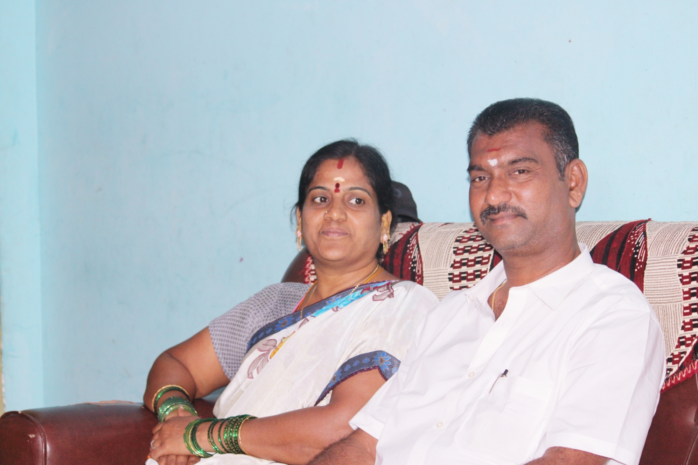

My favorite god is lord shiva so i usally use to pray for lord shiva so that my favorite place to visite Kedarnath temple
it is also 12 Jyotir Lingams and is also the most important temple to visite it my dream to visite that temple and The temple is located on the Garhwal Himalayan range[citation needed] near the Mandakini river, in the state of Uttarakhand, India. Due to extreme weather conditions, the temple is open to the general public only between the months of April (Akshaya Tritiya) and November Kartik Purnima, the autumn full moon
My favorite FOOD BRIYANI
Hyderabadi biryani (also known as Hyderabadi dum biryani) is a style of biryani originating from Hyderabad, India made with basmati rice and meat (mostly mutton). Originating in the kitchens of the Nizam of Hyderabad, it combines elements of Hyderabadi and Mughlai cuisines. Hyderabad biryani is a key dish in Hyderabadi cuisine and it is so famous that the dish is considered synonymous with the city of Hyderabad
My Dad is my Hero
You are truly an inspiration to my life. I know I'd never be where I am today without your constant love, your commitment to hard work, and your unending faith in me. Thank you. You're the best, and I'm so grateful that you're my dad!

MY Favorite Actor was Power Pawan Kalyan
Kalyan was born on 2 September in 1968 or 1971[n 1] to Konidela Venkata Rao and Anjana Devi in Bapatla, Andhra Pradesh.[23][24] He is the younger brother of Chiranjeevi and Nagendra Babu. He was awarded "Pawan" during one of his public martial arts presentations.[25] He holds a black belt in karate.[26] He is also the uncle of actors Ram Charan,[27] Varun Tej,[28] Sai Dharam Tej[29] and Allu Arjun.
Jana Sena Party
Kalyan founded a political party named Jana Sena Party on 14 March 2014.[57] He wrote a book titled Ism which is also the ideology of the Jana Sena party.[58] He met with then BJP Prime ministerial candidate Narendra Modi to discuss the issues related to both the Telugu states and extended his support.
My Favorite Actress Rashmika Mandanna
Rashmika Mandanna was born on 5 April 1996 in a Kodava famil to Suman and Madan Mandanna in Virajpet, a town in Kodagu district of Karnataka.
She completed her early schooling from Coorg Public School in Kodagu.
She studied for a bachelor's degree in Psychology, Journalism and English Literature at the M. S. Ramaiah College of Arts, Science and Commerce in Bangalore.[4]